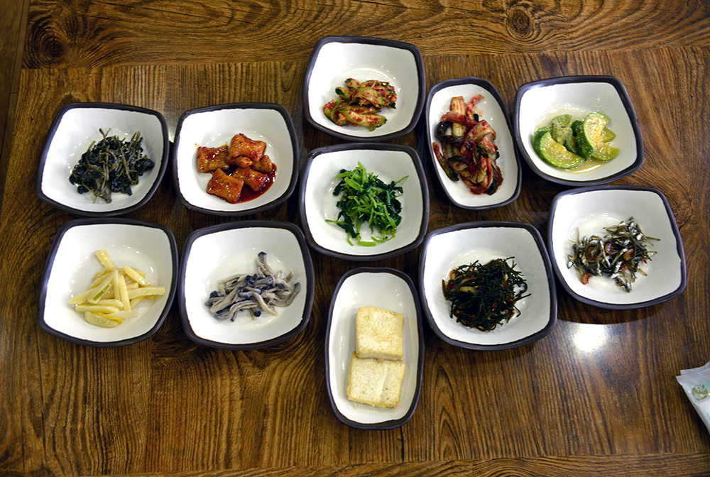

Korean Sidedish Primer

Seasoned Aster
- Korean name: Chwi Namool (취나물)
- Seasoning: Salt, sesame oil, garlic
Spicy Fishcake
- Korean name: MaeWoon Umook Bookum(매운 어묵 볶음)
- Seasoning: Red pepper, Soysauce, sesame oil, Sesame oil, garlic
Cucumber Salad
- Korean name: Oi Mucim (오이무침)
- Seasoning: Salt, sesame oil, garlic
Cabbage Salad
- Korean name: Baechu Geotjeoli (배추겉절이)
- Seasoning: Red pepper, Salt, sesame oil, garlic
Seasoned Zucchini
- Korean name: Hobak Namool (호박나물)
- Seasoning: Salt, Garlic, Permented shrimp paste
Bellflower Roots
- Korean name: Doraji Namul (도라지나물)
- Seasoning: Salt, sesame oil, garlic
Mushroom Salad
- Korean name: Busot Moochim (버섯무침)
- Seasoning: Salt, sesame oil, garlic
Grilled Tofu
- Korean name: Doboo Gui (두부구이)
- Seasoning: Salt, sesame oil, garlic
Seasoned Seeweed
- Korean name: Tot Namul (톳나물)
- Seasoning: Salt, sesame oil, garlic
Stirfried Anchovy
- Korean name: Myul Chi Bokum (멸치볶음)
- Seasoning: Salt, sesame oil, garlic
Seasoned Spinach
- Korean name: Shigumchi Namul (시금치나물)
- Seasoning: Salt, sesame oil, garlic